Next: Tesseral Harmonics Up: USERS MANUAL Workshops available Previous: ErNiBC - single ion Contents Index
For historical reasons, crystal field parameters (effectively the radial matrix elements of the crystal field
interactions) may be expressed in two different "normalisation", which we shall call Stevens and
Wybourne. Stevens [65,27] initially expressed the radial parts of the crystal field interaction
in terms of angular momentum operators  ,
,  ,
,  . He did this by taking the Cartesian expressions for
the tesseral harmonic functions (see Appendix F), and replacing all instances of the coordinates
. He did this by taking the Cartesian expressions for
the tesseral harmonic functions (see Appendix F), and replacing all instances of the coordinates
 ,
,  , and
, and  with , and and allowing for the commutation relations of the angular
momentum operators, but without considering the normalisation condition of these functions and hence are missing
the prefactors before the square brackets in the expressions in Appendix F. We denote these
prefactors . The Stevens crystal field Hamiltonian is thus
with , and and allowing for the commutation relations of the angular
momentum operators, but without considering the normalisation condition of these functions and hence are missing
the prefactors before the square brackets in the expressions in Appendix F. We denote these
prefactors . The Stevens crystal field Hamiltonian is thus
where the product
 is commonly taken in the literature as the crystal
field parameter, because the factorisation into an intrinsic parameter
is commonly taken in the literature as the crystal
field parameter, because the factorisation into an intrinsic parameter  and the expectation value of
the radial wavefunction
is derived from the point charge model and is not generally
valid. Alternatively,
the product
is
also commonly used, particularly in the neutron scattering literature.
and the expectation value of
the radial wavefunction
is derived from the point charge model and is not generally
valid. Alternatively,
the product
is
also commonly used, particularly in the neutron scattering literature.
 are the Stevens
factors: for
are the Stevens
factors: for  these correspond to the number of electrons
in the unfilled shell
these correspond to the number of electrons
in the unfilled shell
 , respectively.
, respectively.
Wybourne [54] and subsequent co-authors on the other hand chose to use the tensor operators
 which transform in the same way as the functions
which transform in the same way as the functions
 , where
are the spherical harmonic functions, to describe the crystal
field. Thus the angular-dependent part of the crystal field matrix elements used by Wybourne differed from
that of Stevens by the factor
, where
are the spherical harmonic functions, to describe the crystal
field. Thus the angular-dependent part of the crystal field matrix elements used by Wybourne differed from
that of Stevens by the factor
 and
for
and
for  . The crystal field Hamiltonian used by Wybourne is
thus (in our notation)
. The crystal field Hamiltonian used by Wybourne is
thus (in our notation)
The disadvantage of the Wybourne approach is that one requires imaginary crystal field parameters, because the
tensor operators are not Hermitian. In McPhase, we have instead chosen to use slightly
different tensor operators , which are the Hermitian combinations of the ,
giving the Hamiltonian

Our  parameters therefore have the same normalisation as the Wybourne parameters but will be real.
In summary:
 are such that
are such that
 in case
of orthogonal lattices and in case of non-orthogonal axes
the convention is
in case
of orthogonal lattices and in case of non-orthogonal axes
the convention is  ,
and perpendicular to and .
,
and perpendicular to and .
|
| ||||||||||||||||||||||||||||||||||||||||||||||||